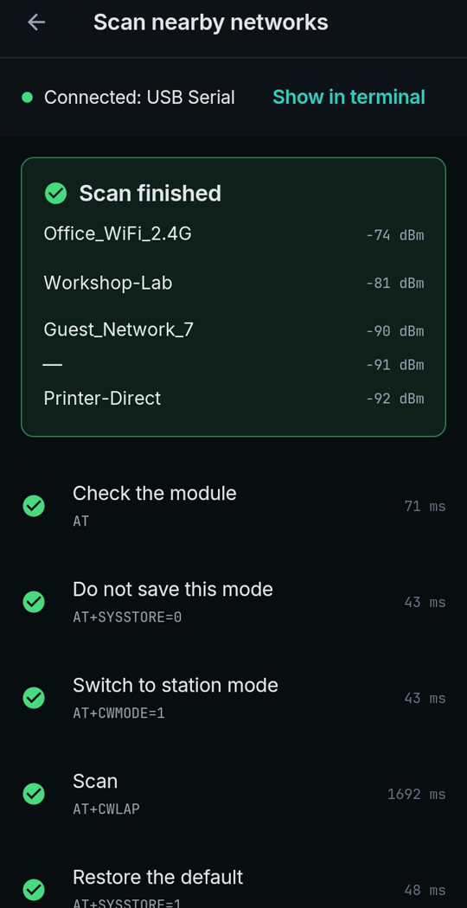

Scan Wi-Fi with an ESP8266, from your phone
Before you point an ESP8266 at a network, it helps to know which networks the module can actually hear, and how strongly. LinkJig runs the scan for you and lists every network with its signal strength.
This is a real session: an ESP-01S running AT firmware 2.2.0, connected to an Android phone through USB OTG and a CH340 USB-UART adapter.
Scan
- Connect the adapter and open the serial device.
- Open the Modules tab, choose ESP8266, then Scan nearby networks.
- Tap Scan.

The network names in this picture are made up; the real ones were replaced.
What it sends
| Step | Command | Why |
|---|---|---|
| Check the module | AT | Is it answering? |
| Do not save this mode | AT+SYSSTORE=0 | The mode change below stays out of flash |
| Switch to station mode | AT+CWMODE=1 | Scanning needs station mode |
| Scan | AT+CWLAP | Lists the networks; took 1.7 s here |
| Restore the default | AT+SYSSTORE=1 | Back to saving settings as before |
Reading the result
Signal is in dBm and always negative: closer to zero is stronger. Around -70 dBm is usable; near -90 dBm the link will be weak. A line with "—" is a hidden network that does not broadcast its name.
Limits
- Recorded with AT firmware 2.2.0. Other AT versions may answer differently.
- The ESP8266 only hears 2.4 GHz networks.
- If the module does not answer, check it first: [Is your ESP8266 alive?](esp-module-check.html)
Try it
Watch the demo on YouTube. LinkJig is on Google Play and the Microsoft Store.